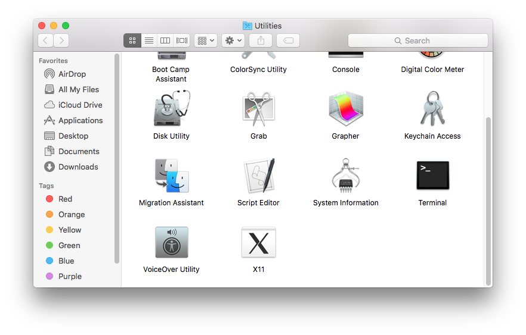
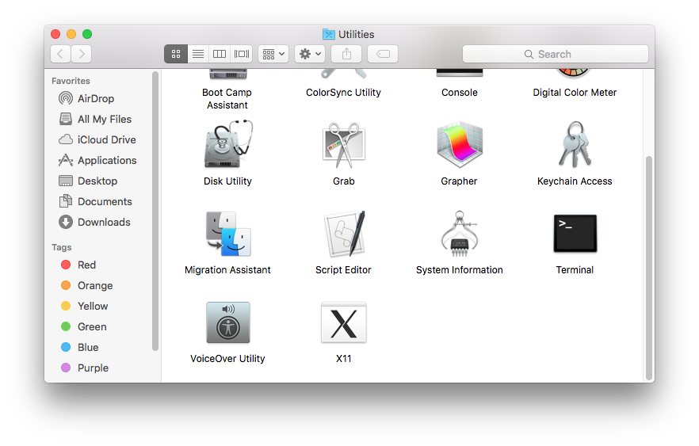
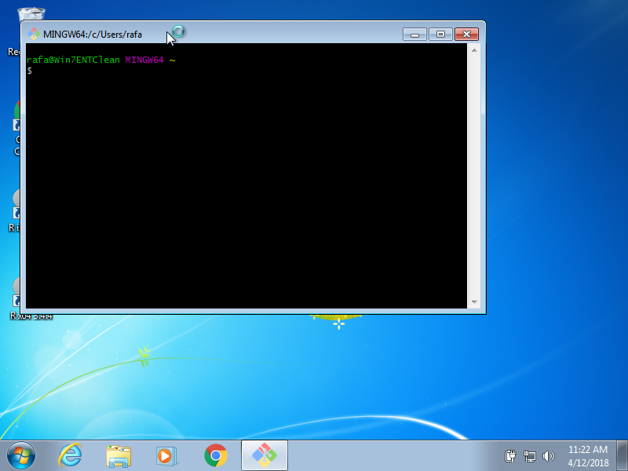
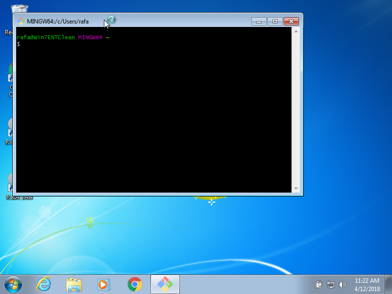
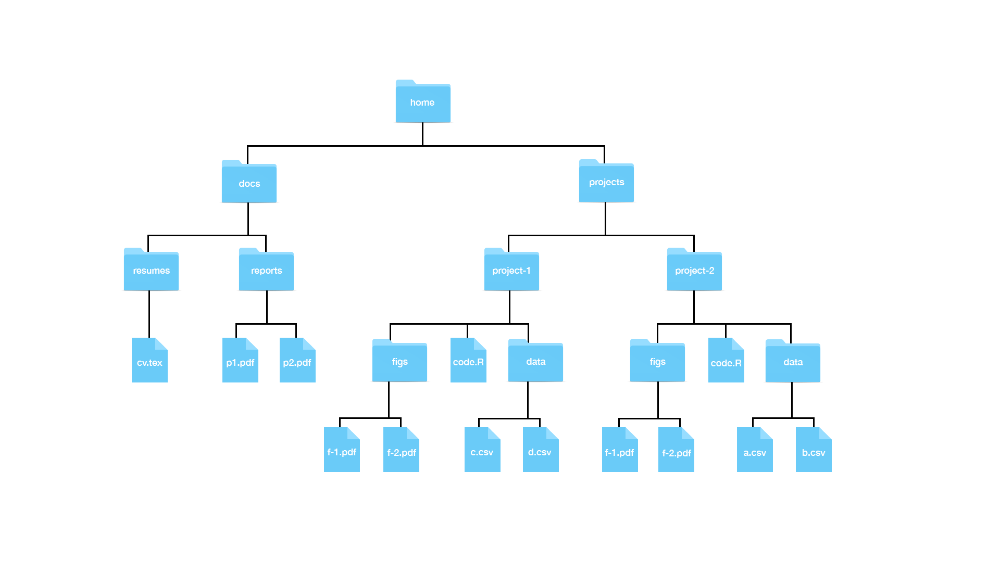
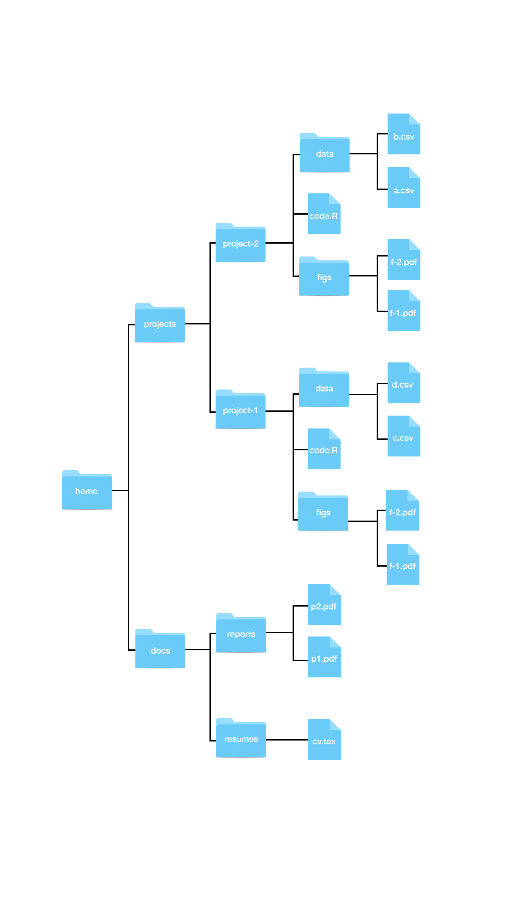

Chapter 40 Organizing with Unix
Unix is the operating system of choice in data science. We will introduce you to the Unix way of thinking using an example: how to keep a data analysis project organized. We will learn some of the most commonly used commands along the way. However, we won’t go into the details here. We highly encourage you to learn more, especially when you find yourself using the mouse too much or performing a repetitive task often. In those cases, there is probably a more efficient way to do it in Unix. Here are some basic courses to get you started:
- https://www.codecademy.com/learn/learn-the-command-line
- https://www.edx.org/course/introduction-linux-linuxfoundationx-lfs101x-1
- https://www.coursera.org/learn/unix
There are many reference books as well. Bite Size Linux and Bite Size Command Line are two particularly clear, succinct, and complete examples.
When searching for Unix resources, keep in mind that other terms used to describe what we will learn here are Linux, the shell and the command line. Basically, what we are learning is a series of commands and a way of thinking that facilitates the organization of files without using the mouse.
To serve as motivation, we are going to start constructing a directory using Unix tools and RStudio.
40.1 The terminal
The terminal is our window into the Unix world. Instead of clicking, dragging and dropping to organize our files and folders, we will be typing commands into the terminal. The way we do this is similar to how we type commands into the R console, but instead of generating plots and statistical summaries, we will be organizing files on our system.
We have already described how we can access a terminal using RStudio, namely by going to Tools, then Terminal, then New Terminal. But often we want access to the terminal, but do not need RStudio. We already described how to access the terminal on the Mac by opening the application in the Utilities folder:
 

You can also use the Spotlight feature on the Mac by typing command-spacebar, then type Terminal.
On Windows, assuming you’ve installed Git Bash, we can also access a terminal without RStudio by running the Git Bash program:
 

Once you have a terminal open, you can start typing commands. You should see a blinking cursor at the spot where what you type will show up. This position is called the command line. Once you type something and hit enter on Windows or return on the Mac, Unix will try to execute this command. If you want to try out an example, type this command into your command line:
echo "hello world"The command echo is similar to cat in R. Executing this line should print out hello world, then return back to the command line.
Notice that you can’t use the mouse to move around in the terminal. You have to use the keyboard. To go back to a command you previously typed, you can use the up arrow.
Note that above we included a chunk of code showing Unix commands in the same way we have previously shown R commands. We will make sure to distinguish when the command is meant for R and when it is meant for Unix.
40.2 The filesystem
We refer to all the files, folder, and programs on your computer as the filesystem. Keep in mind that folders and programs are also files, but this is a technicality we rarely think about and ignore in this book. We will focus on files and folders for now and discuss programs, or executables, in a later section.
40.2.1 Directories and subdirectories
The first concept you need to grasp to become a Unix user is how your file system is organized. You should think of it as a series of nested folders each containing files, folders, and executables.
Here is a visual representation of the structure we are describing:

In Unix, we refer to folders as directories. Directories that are inside other directories are often referred to as subdirectories. So, for example, in the figure above, the directory docs has two subdirectories: reports and resumes, and docs is a subdirectory of home.
40.2.2 The home directory
The home directory is where all your stuff is kept, as opposed to the system files that come with your computer, which are kept elsewhere. In the figure above, the directory called home represents your home directory, but that is rarely the name used. On your system, the name of your home directory is likely the same as your username on that system. Below is an example on Windows showing a home directory, in this case, named rafa:

Here is an example from a Mac:

Now, look back at the figure showing a filesystem. Suppose you are using a point-and-click system and you want to remove the file cv.tex. Imagine that on your screen you can see the home directory. To erase this file, you would double click on the home directory, then docs, the resumes, and then drag cv.tex to the trash. Here you are experiencing the hierarchical nature of the system: cv.tex is a file inside the resumes directory, which is a subdirectory inside the docs directory, which is a subdirectory of the home directory.
Now suppose you can’t see your home directory on your screen. You would somehow need to make it appear on your screen. One way to do this is to navigate from what is called the root directory all the way to your home directory. Any file system will have what is called a root directory which is the directory that contains all directories. The home directory shown in the figure above will usually be two or more levels from the root. On Windows, you will have a structure like this:

while on the Mac, it will be like this:

Note for Windows User: The typical R installation will make your Documents directory your home directory in R. This will likely be different from your home directory in Git Bash. Generally, when we discuss home directories, we refer to the Unix home directory which for Windows, in this book, is the Git Bash unix directory.
40.2.3 Working directory
The concept of a current location is part of the point-and-click experience: at any given moment we are in a folder and see the content of that folder. As you search for a file, as we did above, you are experiencing the concept of a current location: once you double click on a directory, you change locations and are now in that folder, as opposed to the folder you were in before.
In Unix, we don’t have the same visual cues, but the concept of a current location is indispensable. We refer to this as the working directory. Each terminal window you have open has a working directory associated with it.
How do we know what is our working directory? To answer this, we learn our first Unix command: pwd, which stands for print working directory. This command returns the working directory.
Open a terminal and type:
pwdWe do not show the result of running this command because it will be quite different on your system compared to others. If you open a terminal and type pwd as your first command, you should see something like /Users/yourusername on a Mac or something like /c/Users/yourusername on Windows. The character string returned by calling pwd represents your working directory. When we first open a terminal, it will start in our home directory so in this case the working directory is the home directory.
Notice that the forward slashes / in the strings above separate directories. So, for example, the location /c/Users/rafa implies that our working directory is called rafa and it is a subdirectory of Users, which is a subdirectory of c, which is a subdirectory of the root directory. The root directory is therefore represented by just a forward slash: /.
40.2.4 Paths
We refer to the string returned by pwd as the full path of the working directory. The name comes from the fact that this string spells out the path you need to follow to get to the directory in question from the root directory. Every directory has a full path. Later, we will learn about relative paths, which tell us how to get to a directory from the working directory.
In Unix, we use the shorthand ~ as a nickname for your home directory. So, for example, if docs is a directory in your home directory, the full path for docs can be written like this ~/docs.
Most terminals will show the path to your working directory right on the command line. If you are using default settings and open a terminal on the Mac, you will see that right at the command line you have something like computername:~ username with ~ representing your working directory, which in this example is the home directory ~. The same is true for the Git Bash terminal where you will see something like username@computername MINGW64 ~, with the working directory at the end. When we change directories, we will see this change on both Macs and Windows.
40.3 Unix commands
We will now learn a series of Unix commands that will permit us to prepare a directory for a data science project. We also provide examples of commands that, if you type into your terminal, will return an error. This is because we are assuming the file system in the earlier diagram. Your file system is different. In the next section, we will provide examples that you can type in.
40.3.1 ls: Listing directory content
In a point-and-click system, we know what is in a directory because we see it. In the terminal, we do not see the icons. Instead, we use the command ls to list the directory content.
To see the content of you home directory, open a terminal and type:
lsWe will see more examples soon.
40.3.2 mkdir and rmdir: make and remove a directory
When we are preparing for a data science project, we will need to create directories. In Unix, we can do this with the command mkdir, which stands for make directory.
Because you will soon be working on several projects, we highly recommend creating a directory called projects in your home directory.
You can try this particular example on your system. Open a terminal and type:
mkdir projectsIf you do this correctly, nothing will happen: no news is good news. If the directory already exists, you will get an error message and the existing directory will remain untouched.
To confirm that you created these directories, you can list the directories:
lsYou should see the directories we just created listed. Perhaps you can also see many other directories that come pre-installed on your computer.
For illustrative purposes, let’s make a few more directories. You can list more than one directory name like this:
mkdir docs teachingYou can check to see if the three directories were created:
lsIf you made a mistake and need to remove the directory, you can use the command rmdir to remove it.
mkdir junk
rmdir junkThis will remove the directory as long as it is empty. If it is not empty, you will get an error message and the directory will remain untouched. To remove directories that are not empty, we we will learn about the command rm later.
40.4 Some examples
Let’s explore some examples of using cd. To help visualize, we will show the graphical representation of our file system vertically:

Suppose our working directory is ~/projects and we want to move to figs in project-1.
Here it is convenient to use relative paths:
cd project-1/figsNow suppose our working directory is ~/projects and we want to move to reports in docs, how can we do this?
One way is to use relative paths:
cd ../docs/reportsAnother is to use the full path:
cd ~/docs/reportsIf you are trying this out on your system, remember to use auto-complete.
Let’s examine one more example. Suppose we are in ~/projects/project-1/figs and want to change to ~/projects/project-2. Again, there are two ways.
With relative paths:
cd ../../proejct-2and with full paths:
cd ~/projects/project-240.5 More Unix commands
40.5.1 mv: moving files
In a point-and-click system, we move files from one directory to another by dragging and dropping. In Unix, we use the mv command.
Warning: mv will not ask “are you sure?” if your move results in overwriting a file.
Now that you know how to use full and relative paths, using mv is relatively straightforward. The general form is:
mv path-to-file path-to-destination-directorySo, for example, if we want to move the file cv.tex from resumes to reports, you could use the full paths like this:
mv ~/docs/resumes/cv.tex ~/docs/reports/You can also use relative paths. So you could do this:
cd ~/docs/resumes
mv cv.tex ../reports/or this:
cd ~/docs/reports/
mv ../cv.tex ./Notice that, in the last one, we used the working directory shortcut . to give a relative path as the destination directory.
We can also use mv to change the name of a file. To do this, instead of the second argument being the destination directory, it also includes a filename. So, for example, to change the name from cv.tex to resume.tex, we simply type:
cd ~/docs/resumes
mv cv.tex resume.texWe can also combine the move and a rename. For example:
cd ~/docs/resumes
mv cv.tex ../reports/resume.texAnd we can move entire directories. So to move the resumes directory into reports, we do as follows:
mv ~/docs/resumes ~/docs/reports/It is important to add the last / to make it clear you do not want to rename the resumes directory to reports, but rather move into reports.
40.5.2 cp: copying files
The command cp behaves similar to mv except instead of moving, we copy the file, meaning that the original file stays untouched.
So in all the mv examples above, you can switch mv to cp and they will copy instead of move with one exception: we can’t copy entire directories without learning about arguments.
40.5.3 rm: removing files
In point-and-click systems, we remove files by dragging and dropping them into the trash or using a special click on the mouse. In Unix, we use the rm command.
Warning: Unlike throwing files into the trash, rm is permanent so be careful!
The general way it works is as follows:
rm filenameYou can actually list files as well like this:
rm filename-1 filename-2 filename-3You can use full or relative paths. To remove directories, you will have to learn about arguments which we do later.
40.5.4 less: looking at a file
Often you want to quickly look at the content of a file. If this file is a text file, the quickest way to do is by using the command less. To look a the file cv.tex, you do this:
cd ~/docs/resumes
less cv.tex To exit the viewer, you type q. If the files are long, you can use the arrow keys to move up and down. There are many other keyboard commands you can use within less to, for example, search or jump pages. You will learn more about this in a later section. If you are wondering why the command is called less, it is because the original was called more, as in “show me more of this file”. The second version was called less because of the saying “less is more”.
40.6 Preparing for a data science project
We are now ready to prepare a directory for a project. You should start by creating a directory where you will keep all your projects. We recommend a directory called projects in your home directory. To do this you would type:
cd ~
mkdir projectsOur project relates to gun violence murders so we will call the directory for our project murders. It will be a subdirectory in our projects directories. In the murders directory, we will create two subdirectories to hold the raw data and intermediate data. We will call these data and rda respectively.
Open a terminal and make sure you are in the home directory:
cd ~Now run the following commands to create the directory structure we want. At the end, we use ls and pwd to confirm we have generated the correct directories in the correct working directory:
cd projects
mkdir murders
cd murders
mkdir data rdas
ls
pwdNote that the full path of our murders dataset is ~/projects/murders.
So if we open a new terminal and want to navigate into that directory we type:
cd projects/murdersIn RStudio, when you start a new project, you can pick Existing Directory instead of New Directory:

and write the full path of the murders directory:

Once you do this, you will see the rdas and data directories you created in the Files tab.

Keep in mind that when we are in this project, our default working directory will be ~/projects/murders. You can confirm this by typing getwd() into your R session. This is important because it will help us organize the code when we need to write file paths.
Pro tip: always use relative paths in code for data science projects. These should be relative to the default working directory. The problem with using full paths is that your code is unlikely to work on filesystems other that yours since the directory structures will be different. This includes using the home directory ~ as part of your path.
Let’s now write a script that downloads a file into the data directory. We will call this file download-data.R.
The content of this file will be:
url <- "https://raw.githubusercontent.com/rafalab/dslabs/master/inst/extdata/murders.csv"
dest_file <- "data/murders.csv"
download.file(url, destfile = dest_file)Notice that we are using the relative path data/muders.csv.
Run this code in R and you will see that a file is added to the data directory.
Now we are ready to write a script to read this data and prepare a table that we can use for analysis. Call the file wrangle-data.R. The content of this file will be:
library(tidyverse)
murders <- read_csv("data/murders.csv")
murders <-murders %>% mutate(region = factor(region),
rate = total / population * 10^5)
save(murders, file = "rdas/murders.rda")Again note that we use relative paths exclusively.
In this file, we introduce a command we have not seen: save. The save command in R saves objects into what is called an rda file: rda is short for R data. We recommend using the .rda suffix on files saving R objects. You will see that .RData is also used.
If you run this code above, the processed data object will be saved in a file in the rda directory. Although not the case here, this approach is often practical because generating the data object we use for final analyses and plots can be a complex and time consuming process. So we run this process once and save the file. But we still want to be able to generate the entire analysis from the raw data.
Now we are ready to write the analysis file. Let’s call it analysis.R. The content should be the following:
library(tidyverse)
load("rdas/murders.rda")
murders %>% mutate(abb = reorder(abb, rate)) %>%
ggplot(aes(abb, rate)) +
geom_bar(width = 0.5, stat = "identity", color = "black") +
coord_flip()If you run this analysis, you will see that it generates a plot.
Now suppose we want to save the generated plot for use in a report or presentation. We can do this with the ggplot command ggsave. But where do we put the graph? We should be systematically organized so we will save plots to a directory called figs. Start by creating a directory by typing the following in the terminal:
mkdir figsand then you can add the line:
ggsave("figs/barplot.png")to your R script. If you run the script now, a png file will be saved into the figs directory. If we wanted to copy that file to some other directory where we are developing a presentation, we can avoid using the mouse by using the cp command in our terminal.
You now have a self-contained analysis in one directory. One final recommendation is to create a README.txt file describing what each of these files does for the benefit of others reading your code, including your future self. This would not be a script but just some notes. One of the options provided when opening a new file in RStudio is a text file. You can save something like this into the text file:
We analyze US gun murder data collected by the FBI.
download-data.R - Downloads csv file to data directory
wrangle-data.R - Creates a derived dataset and saves as R object in rdas directory
analysis.R - A plot is generated and saved in the figs directory.If you now type pwd, you will see you are in ~/projects/murders with ~ representing the home directory.
You have now successfully used Unix and RStudio to create a directory for a project. When a new project comes your way, you can simply cd back to project directory, create a new directory and start a new project.
You can see a version of this project, organized with Unix directories, on GitHub. You can download a copy to your computer by using the git clone command on your terminal. This command will create a directory called murders on your working directory so be careful where you call it from.
git clone https://github.com/rairizarry/murders.git40.7 Advanced Unix
Most Unix implementations include a large number of powerful tools and utilities. We have just learned the very basics here. We recommend that you use Unix as your main file management tool. It will take time to become comfortable with it, but as you struggle, you will find yourself learning just by looking up solutions on the internet. In this section, we superficially cover slightly more advanced topics. The main purpose of the section is to make you aware of what is available rather than explain everything in detail.
40.7.1 Arguments
Most Unix commands can be run with arguments. Arguments are typically defined by using a dash - or two dashes --, followed by a letter or a word. An example of an argument is the -r in front of rm. The r stands for recursive and the result is that files and directories are removed recursively, which means that if you type:
rm -r directory-nameall files, subdirectories, files in subdirectories, subdirectories in subdirectories, etc. will be removed. This is equivalent to throwing a folder in the trash, except you can’t recover it. Once you remove it, it is deleted for good. Often, when you are removing directories, you will encounter files that are protected. In such cases, you can use the argument -f which stands for force.
You can also combine arguments. So, for instance, to remove a directory regardless of protected files, you type:
rm -rf directory-nameRemember that once you remove there is no going back, so use this command very carefully.
A command that is often called with argument is ls. Here are some examples:
ls -a The a stands for all. This argument makes ls show you all files in the directory, including hidden files. In Unix, all files starting with a . are hidden. Many applications create hidden directories to store important information without getting in the way of your work. An example is git. Once you initialize a directory as a git directory with git init, a hidden directory called .git is created. Another hidden file is the .gitignore file.
Another example of using an argument is:
ls -l The l stands for long and the result is that more information about the files is shown.
It is often useful to see files in chronological order. For that we use:
ls -t and to reverse the order of how files are shown you can use:
ls -r We can combine all these arguments to show more information for all files in reverse chronological order:
ls -lart Each command has a different set of arguments. In the next section, we learn how to find out what they each do.
40.7.2 Getting help
As you may have noticed, Unix uses an extreme version of abbreviations. This makes it very efficient, but hard to guess how to call commands. To make up for this weakness, Unix includes complete help files or man pages (man is short for manual). In most systems, you can type man followed by the command name to get help. So for ls, we would type:
man lsThis command is not available in some of the compact implementations of Unix, such as Git Bash. An alternative way to get help that works on Git Bash is to type the command followed by --help. So for ls, it would be as follows:
ls --help40.7.3 Pipes
The help pages are typically long and if you type the commands above to see the help, it scrolls all the way to the end. It would be useful if we could save the help to a file and then use less to see it. The pipe, written like this |, does something similar. It pipes the results of a command to the command after the pipe. This is similar to the pipe %>% that we use in R. To get more help we thus can type:
man ls | lessor in Git Bash:
ls --help | less This is also useful when listing files with many files. We can type:
ls -lart | less 40.7.4 Wild cards
One of the most powerful aspects of Unix are the wild cards. Suppose we want to remove all the temporary html files produced while trouble shooting for a project. Imagine there are dozens of files. It would be quite painful to remove them one by one. In Unix, we can actually write an expression that means all the files that end in .html. To do this we type wildcard *. Specifically, to list all html files, we would type:
ls *.htmlTo remove all html files in a directory, we would type:
rm *.htmlThe other useful wild card is the ? symbol. This means any character. So if all the files we want to erase have the form file-001.html with the numbers going from 1 to 999, we can type:
rm file-???.htmlThis will only remove files with that format.
We can combine wild cards. For example, to remove all files with the name file-001 regardless of suffix, we can type:
rm file-???.* Warning: Combining rm with the * wildcard can be dangerous. There are combination of these command that will erase you entire filesystem without asking “are you sure?”. Make sure you understand how it works before using this wild card with the rm command.
40.7.5 Environment variables
Unix has settings that affect your command line environment. These are called environment variables. The home directory is one of them. We can actually change some of these. In Unix, variables are distinguished from other entities by adding a $ in front. The home directory is stored in $HOME.
Earlier we saw that echo is the Unix command for print. So we can see our home directory by typing:
echo $HOME You can see them all by typing:
envYou can change some of these environment variables. But their names vary across different shells. We describe shells in the next section.
40.7.6 Shells
Much of what we use in this chapter is part of what is called the Unix shell. There are actually different shells, but the differences are almost unnoticeable. They are also important, although we do not cover those here. You can see what shell you are using by typing:
echo $SHELLThe most common one is bash.
Once you know the shell, you can change environmental variables. In Bash Shell, we do it using export variable value. To change the path, described in more detail soon, type: (Don’t actually run this command though!)
export PATH = /usr/bin/There is a program that is run before each terminal starts, where you can edit variables so they change whenever you call the terminal. This changes in different implementations, but if using bash, you can create a file called .bashrc, .bash_profile,.bash_login, or .profile. You might already have one.
40.7.7 Executables
In Unix, all programs are files. They are called executables. So ls, mv and git are all files. But where are these program files? You can find out using the command which:
which git
#> /usr/bin/gitThat directory is probably full of program files. The directory /usr/bin usually holds many program files. If you type:
ls /usr/binin your terminal, you will see several executable files.
There are other directories that usually hold program files. The Application directory in the MAC or Program Files directory in Windows are examples.
When you type ls, Unix knows to run a program which is an executable that is stored in some other directory. So how does Unix know where to find it? This information is included in the environmental variable $PATH. If you type:
echo $PATHyou will see a list of directories separated by :. The directory /usr/bin is probably one of the first ones on the list.
Unix looks for program files in those directories in that order. Although we don’t teach it here, you can actually create executables yourself. However, if you put it in your working directory and this directory is not on the path, you can’t run it just by typing the command. You get around this by typing the full path. So if your command is called my-ls, you can type:
./my-lsOnce you have mastered the basics of Unix, you should consider learning to write your own executables as they can help alleviate repetitive work.
40.7.8 Permissions and file types
If you type:
ls -lAt the beginning, you will see a series of symbols like this -rw-r--r--. This string indicates the type of file: regular file -, directory d, or executable x. This string also indicates the permission of the file: is it readable? writable? executable? Can other users on the system read the file? Can other users on the system edit the file? Can other users execute if the file is executable? This is more advanced than what we cover here, but you can learn much more in a Unix reference book.
40.7.9 Commands you should learn
There are many commands that we do not teach in this book, but we want to make you aware of them and what they do. They are:
open/start - On the mac
open filenametries to figure out the right application of the filename and open it with that application. This is a very useful command. On Git Bash, you can trystart filename. Try opening anRorRmdfile withopenorstart: it should open them with RStudio.nano - A bare-bones editor.
ln - create a symbolic link. We do not recommend its use, but you should be familiar with it.
tar - archive files and subdirectories of a directory into one file.
ssh - connect to another computer.
grep - search for patterns in a file.
awk/sed - These are two very powerful commands that permit you to find specific strings in files and change them.
40.7.10 File manipulation in R
We can also perform file management from within R. The key functions to learn about can be seen by looking at the help file for ?files. Another useful function is unlink.
Although not generally recommended, note that you can run Unix commands in R using system.